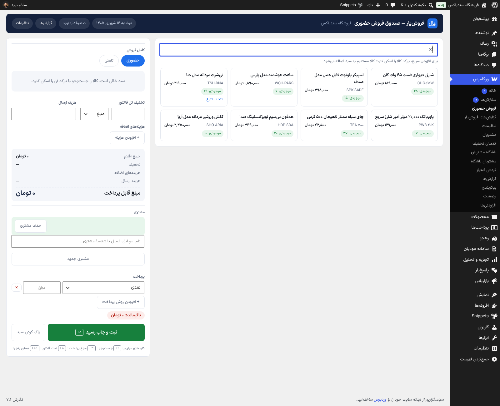
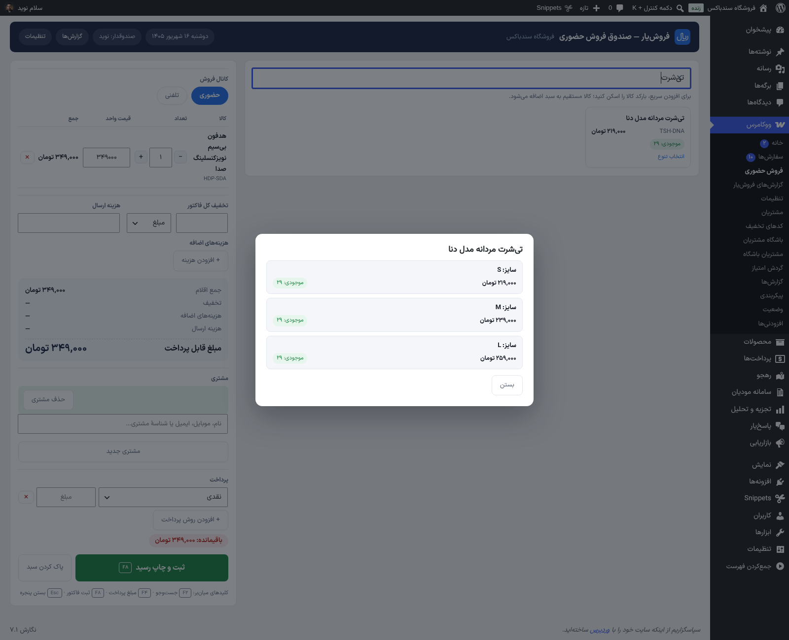
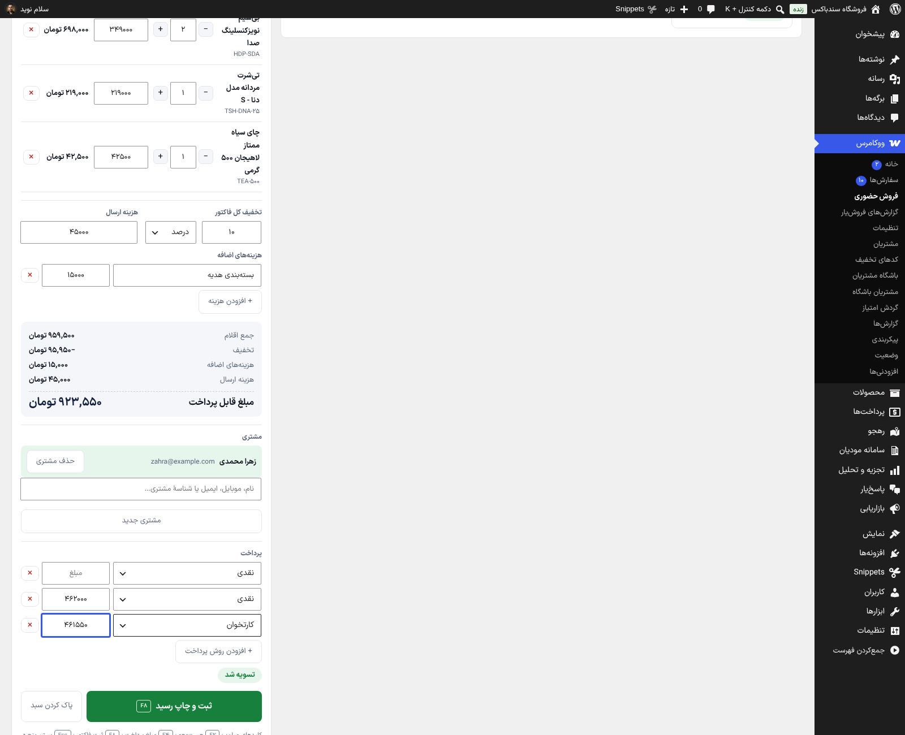
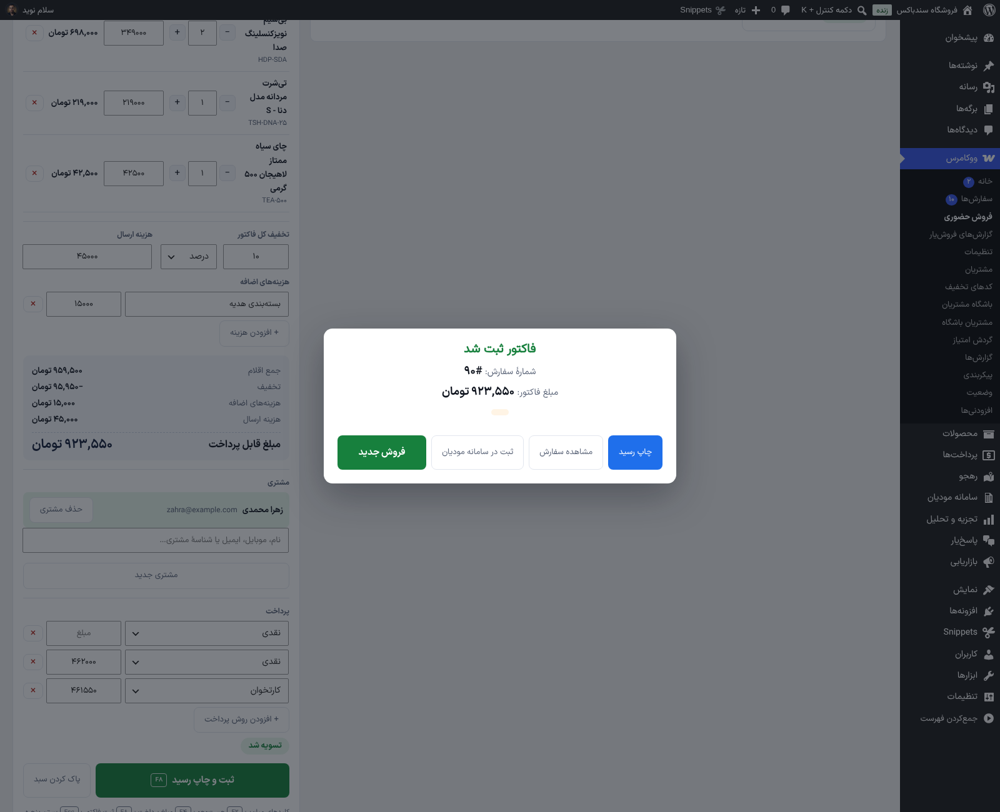
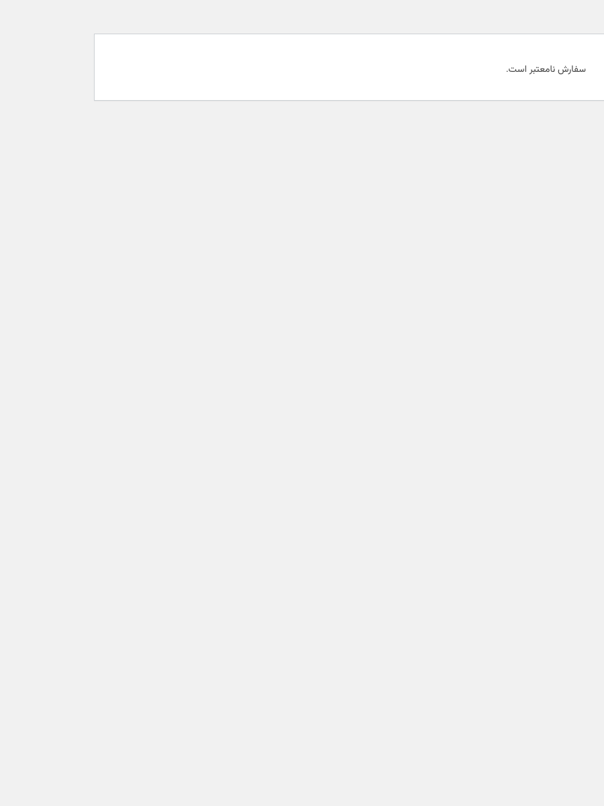
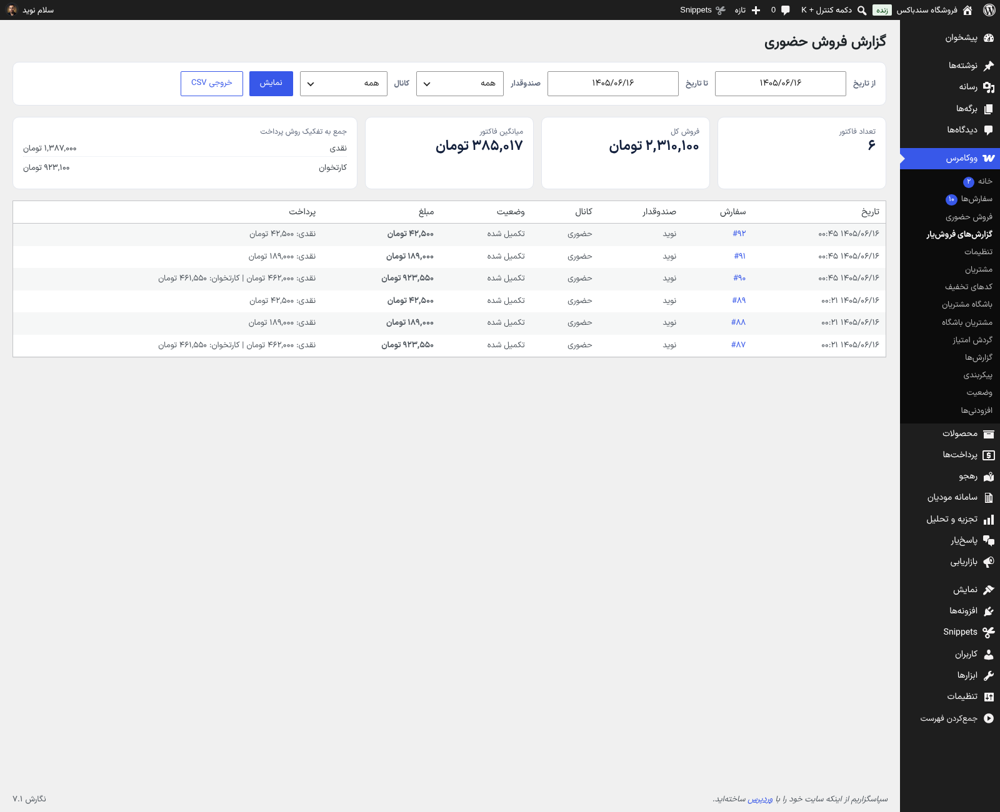
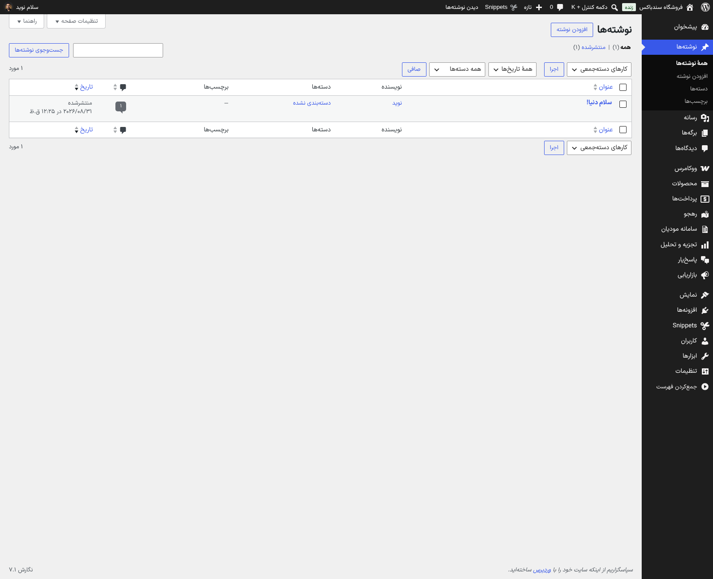

از محیط پیشخوان وردپرس و سندباکس واقعی — برای بزرگنمایی کلیک کنید







ووکامرس مرجع موجودی میماند — بدون جدول موازی و شمارش دستی
راستچین و سریع؛ F2 جستوجو، F4 مبلغ پرداخت، F8 ثبت فاکتور و Esc بستن پنجرهها — فروش بدون لمس موس.
بارکدخوانهای کیبوردی مستقیم به سبد اضافه میکنند؛ فروش کالای ناموجود فقط با اجازهٔ صریح شما در تنظیمات ممکن است.
نقدی، کارتخوان، کارتبهکارت و روشهای دلخواه شما روی یک فاکتور؛ باقیمانده و مبلغ بازگشتی زنده محاسبه میشود.
رسید ۸۰ میلیمتری با تاریخ شمسی و خطوط پرداخت؛ حالت A4 برای فاکتورهای رسمیتر.
کاربر صندوقدار فقط صندوق و گزارش فروش خودش را میبیند و وارد فهرست سفارشهای ووکامرس نمیشود.
هیچ جدول اختصاصی و شمارش موازی وجود ندارد؛ همهچیز با CRUD ووکامرس و سازگار کامل با HPOS.
افزونه را فعال کن و کاربر صندوقدار بساز — بدون وابستگی به هیچ افزونهٔ دیگری؛ کیف پول و مودیان اگر نصب باشند خودکار شناسایی میشوند.
روشهای پرداخت (نقدی، کارتخوان، کیف پول و…) و کانالهای حضوری/تلفنی را به سلیقهٔ فروشگاهت تنظیم کن.
F2 جستوجو، F8 ثبت فاکتور؛ سفارش ووکامرس ساخته میشود، موجودی کم میشود و رسید چاپ میشود — گزارشها هم از همان لحظه پر میشوند.